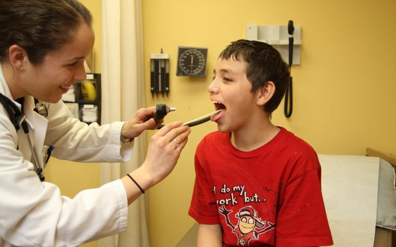
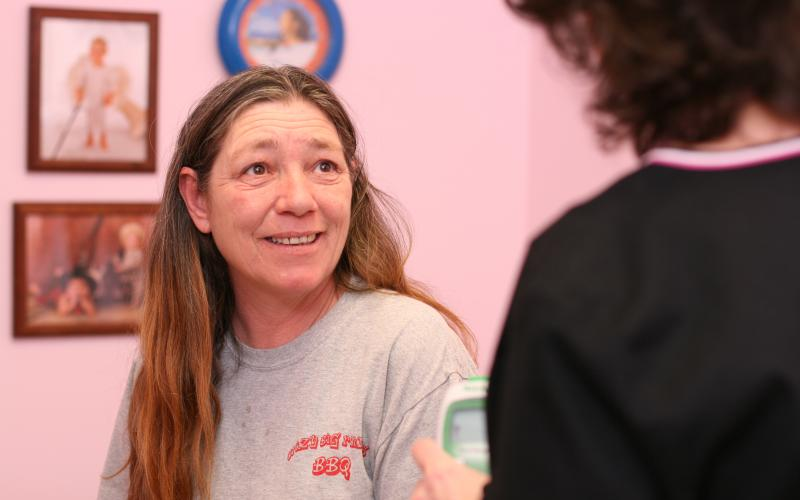

Home
-

- 
- 
What is Free Clinics of Iowa?
The largest network of free medical clinics in the state of Iowa, Free Clinics of Iowa is a donor-supported, not-for-profit organization, consisting of an administrative office and over 30 member free clinics. In rural and urban settings, Free Clinics of Iowa member clinics provide basic healthcare services through volunteer physicians, nurses and other health professionals at no cost to patients.
Mission: Our Purpose
Because we believe every person deserves access to basic healthcare services, Free Clinics of Iowa facilitates the initiation, operation and collaboration of free clinics in the State of Iowa.
Vision Statements: Our Roadmap to Our Mission
- Adapt to the Changing Healthcare System
- Serve Those Who Fall through the Gaps of the Healthcare System
- Provide Compassionate and Appropriate Basic Healthcare Services
- Promote Patient Education and Healthcare System Awareness
- Establish Referral Systems to Accessible and Affordable Health Homes
Click on the Map to Find a Clinic Near You